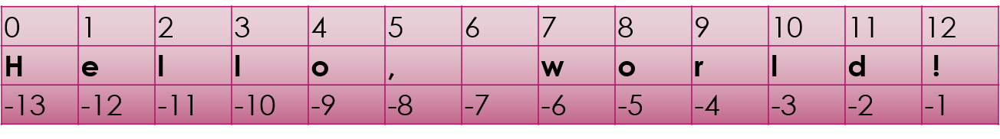

Strings¶

Inserting¶
spam = "Hello, world!"
spam = spam[:6] + " Py-" + spam[7:]
spam
'Hello, Py-world!'
More operations on strings¶
left fill with zeroes¶
'abc def'.zfill(30)
'00000000000000000000000abc def'
remove leading and trailing whitespace¶
' 1234 '.strip()
'1234'
retain non-whitespace in a list¶
' 1234 456 23456 '.split()
['1234', '456', '23456']
split into 3 around string supplied¶
' 1234.567e-45 '.partition('e')
(' 1234.567', 'e', '-45 ')
methods may be chained.¶
' 1234.567e-45 '.strip().partition('e')
('1234.567', 'e', '-45')
to check the datatypes¶
'123456'.isnumeric()
True
'01234567'.isdecimal()
True
'abcd123efg789abc'.isalnum()
True
Expand tabs¶
'\t2345\t56\t678'.expandtabs()
' 2345 56 678'
'\t2345\t56\t678'.expandtabs(12)
' 2345 56 678'
fill with specified character¶
' abcd '.center(30,'+')
'++++++++++++ abcd ++++++++++++'
Find the specified character¶
' abcd efg abc '.find('c')
3
' abcd efg abc '.find('x')
-1
' abcd efg abc '.find('c',7,13)
12
replace the word¶
' The quick brown fox had a quick lunch .... '.replace('quick','lazy')
' The lazy brown fox had a lazy lunch .... '